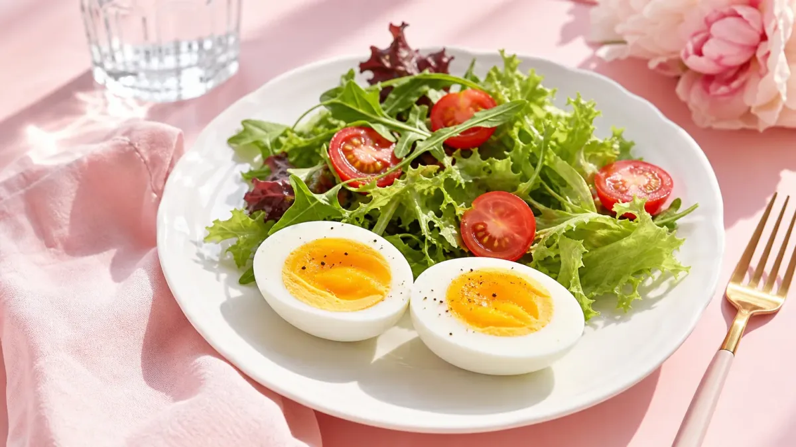

ゆで卵ダイエットとは？まず結論からお伝えします
ゆで卵ダイエットとは、毎日の食事にゆで卵を取り入れて、タンパク質を効率よく摂りながら食べ過ぎを防ぐ食事法です。
特別な食材を買う必要がなく、1個あたり約80kcalと低カロリーなのに満腹感が続くのが人気の理由。忙しい女性でも続けやすいのが魅力です。
「何個食べればいい？」「いつ食べると効果的？」という疑問に、この記事では順番に答えていきます。
ゆで卵がダイエットに向いている3つの理由
① タンパク質が豊富で筋肉を守る
ゆで卵1個には約6〜7gのタンパク質が含まれています。ダイエット中は食事量が減りがちですが、タンパク質が不足すると筋肉が落ちて代謝が下がる原因に。
ゆで卵を食事に加えることで、筋肉を維持しながら体重管理をサポートします。
② 腹持ちがよく間食を減らしやすい
卵に含まれるタンパク質と脂質は消化に時間がかかるため、食後の満足感が長続きします。
間食が多くて困っている方は、食前や間食の代わりにゆで卵1個を食べるだけで、余分なカロリーを抑えやすくなります。
③ 栄養バランスが優秀
ゆで卵にはビタミンB群・ビタミンD・鉄分・亜鉛など、女性に不足しがちな栄養素が豊富。ダイエット中の栄養不足を補うのにも役立ちます。
🥚 ゆで卵ダイエット 完全ガイド｜数字で見る取り入れ方
📊 ゆで卵1個の基本データ
⏰ 1日の取り入れタイミング（おすすめ順）
1日何個食べる？正しい食べ方の目安
ゆで卵の食べ過ぎは、コレステロールや消化への負担が気になる方もいます。1日の目安は1〜2個が基本です。
健康な成人女性であれば、1日2個程度は問題ないとされていますが、持病がある方や気になる方はかかりつけの医師に相談してください。
他のタンパク質食材（鶏むね肉・豆腐・納豆など）とバランスよく組み合わせると、飽きずに続けやすくなります。ダイエット向けのささみレシピも参考にしてみてください。
1週間の取り入れ方｜具体的な食べ方プラン
月・水・金：朝食に取り入れる日
ゆで卵1個＋野菜サラダ＋ご飯100g程度の朝食に。タンパク質と炭水化物をバランスよく摂ることで、午前中のエネルギーが安定します。
火・木：間食の代わりに食べる日
午後3時ごろの小腹が空く時間に、ゆで卵1個＋無糖のお茶。お菓子の代わりにするだけで、1日あたり100〜200kcalのカット効果が期待できます。
土・日：昼食に組み込む日
サラダチキンやレタスと合わせたゆで卵サラダを昼食に。外食が多くなりがちな週末も、ゆで卵を活用することで食事のバランスを整えやすくなります。
1週間の食事全体を見直したい方は、ダイエット献立1週間プランも参考にしてみてください。
ゆで卵ダイエットの注意点3つ
① 卵だけに頼らない
ゆで卵だけを大量に食べる「卵だけダイエット」は栄養が偏りやすく、体調不良の原因になることも。あくまで食事の一部として取り入れましょう。
② 塩分・マヨネーズのかけ過ぎに注意
ゆで卵自体は低カロリーでも、マヨネーズを大量にかけるとカロリーが大幅に増加します。味付けは塩少々・ブラックペッパー・ポン酢などがおすすめです。
③ 毎日同じ食べ方では飽きる
半熟・固ゆで・スライスしてサラダにのせるなど、調理のバリエーションを変えると飽きにくくなります。週ごとに食べ方を変えてみましょう。
ゆで卵と相性のいい食材3選
ゆで卵単体よりも、組み合わせることで満足度がアップします。
- 🥗 葉物野菜（レタス・ほうれん草）：食物繊維で腸内環境をサポート
- 🍅 トマト・アボカド：ビタミンCや良質な脂質でバランスUP
- 🫘 納豆・豆腐：植物性タンパク質との組み合わせで栄養の幅が広がる
よくある質問（FAQ）
Q. ゆで卵ダイエットはいつ食べるのが一番効果的ですか？
朝食時に食べるのが最もおすすめです。朝にタンパク質を摂ることで筋肉の分解を防ぎ、1日を通じて代謝を維持しやすくなります。また、腹持ちがよいため昼食までの間食を減らす効果も期待できます。次点で、午後の間食タイム（14〜16時ごろ）に食べるのも効果的です。
Q. 毎日ゆで卵を食べても大丈夫ですか？
健康な成人女性であれば、1日1〜2個を毎日食べることは一般的に問題ないとされています。ただし、コレステロール値が気になる方や持病がある方は、医師や管理栄養士に相談のうえで取り入れてください。また、卵だけに偏らず、他の食材とバランスよく組み合わせることが大切です。
Q. ゆで卵は何分ゆでると半熟になりますか？
沸騰したお湯に卵を入れてから、6〜7分で半熟、10〜12分で固ゆでになります。半熟のほうが消化がよいとされており、ダイエット中は半熟〜やや固めの仕上がりがおすすめです。ゆで上がったらすぐに冷水にとると、殻がむきやすくなります。
まとめ｜ゆで卵ダイエットは「続けやすさ」が最大の魅力
ゆで卵ダイエットのポイントをまとめます。
- ✅ 1日1〜2個を目安に、食事の一部として取り入れる
- ✅ 朝食か間食の代わりに食べるのが効果的
- ✅ 野菜や他のタンパク質食材と組み合わせてバランスよく
- ✅ まずは1〜2週間、無理なく続けてみる
特別な食材も道具も不要で、コンビニでも手軽に買えるゆで卵。「何から始めればいいかわからない」という方にこそ、取り入れやすい食習慣です。
食事全体の見直しも一緒に進めたい方は、ダイエット食事管理の記事一覧もあわせてチェックしてみてください。